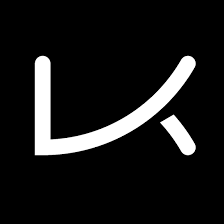
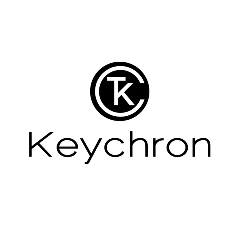
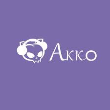

Sites pour acheter des claviers customs
- 

- 

- 
KBDFans
KBDFans est le site le plus populaire dans le monde des claviers customs pour leur DIY kits qui sont parfais pour les débutants.
ShockPort
Shockport est un site de clavier custom canadien avec plein de pièces qui sont très rares à trouver dans d'autres sites. En plus il y a le shipping gratuit.
Keychron
Keychron est la parfaite boutique pour ceux qui veulent un clavier custom, mais veulent de la simplicité avec leurs claviers préfaits.
EPOMAKER
Si il y avait un contraire a keychron, c'est EPOMAKER. Avec leur designs farfelus et bizzares tu trouveras surment quelque chose que tu aimeras.
Keyspresso
Keyspresso est un site canadien (comme shockport) qui offre des switches, deskmats et autres accessoires. Par contre tout ce que vous achetez sur ce site, est local. Et dans la boite que vous recevez avec vos choses vous avez un bonbon au café gratuit. (very nice)
Akkogear
AKKO (à mon avis) sont les ROIS des pièces pas chers. Vous avez des claviers préfaits qui en vaut la peine, des DIY kits, switches, keycaps, deskmats et plus encore.
Ils font également des tonnes de colaborations par example:
Naruto, Dragon ball, Hello Kitty, Sailor Moon, One Piece, Doraemon, Bob l'éponge (ce n'est pas une blague).
Sites pour des nouvelles sur les claviers customs
Switch and Click

Switch and click est un site de nouvelles sur les pièces qui sortent, quelles compagnie fait quoi et plein d'informations en détails.